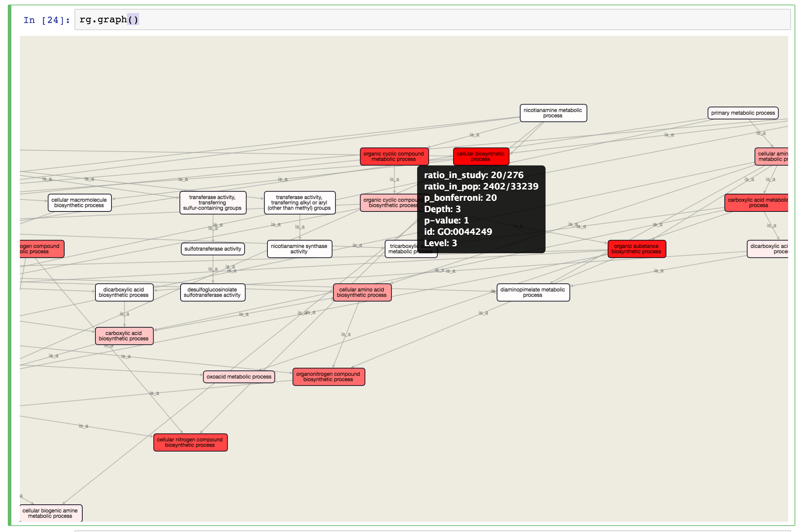

Overview
This is the inner module of pynet and a dynamic visualizer for networkx graph. With several function like tooltips, highlight and node modification.

Usage
Inputs
The class FromNetworkx receive networks.Graph or networks.DiGraph instance, and plot as a HTML widget in the output area.
The difference between Graph and DiGraph is the arrow rendered in the target.
Example
FromNetworkX(nx.complete_graph(5)).plot()
This example generate a five node Graph and render.

The layout
The layout algorithm is mainly spring_layout. if the node number is less then 20, the module will use cose-bilkent implementation. Else the nx.spring_layout is used for speed concern.
If the graph is highly connected, the layout algorithm may have poor performance
Basic interactive feature
Tooltips
if any tooltip item are in the node’s property, a tooltip will appear when mouse hang over the node. the tooltip accepts a dict like
{“FIRST_ATTRITUTE”: “FIRST_VALUE”, “SECOND_ATTRIBUTE”: “SECOND_VALUE”}
and displays:
FIRST_ATTRITUTE: FIRST_VALUE
SECOND_ATTRIBUTE: SECOND_VALUE
look likes:

The cxtmenu
if left click at certain node, a cxtmenu will be displayed with mark, remove and expand(may not available if not implemented).

The DAG visualizer for GO
Specially for Gene Ontology, the DAG plotter is prepared with dagre layout.
Example: 
Style
The FromNetworkx receives style like {‘node’: {…}, ‘edge’: {…}, ‘spring_length’: {…}}
or several presets are available in StylePresets
for example:
ORANGE_CENTERED_LABEL = {
'node': {'label': 'data(label)',
'width': 24,
'height': 24,
'font-size': '-1em',
'font-weight': 2,
'background-color': '#F69924',
'border-width': 2,
'border-color': 'white',
'text-valign': 'center',
'text-halign': 'center',
'color': 'white'
},
'edge': {
'width': 3,
'line-color': '#F69924'
},
'spring_length': 50
}
Caution
Maximum node and edge count
Due to the performance issue cause by JavaScript and Cytoscape.js, and Graph whose node number > 2k or edge > 5k will cause browser long time 100 percent CPU usage.